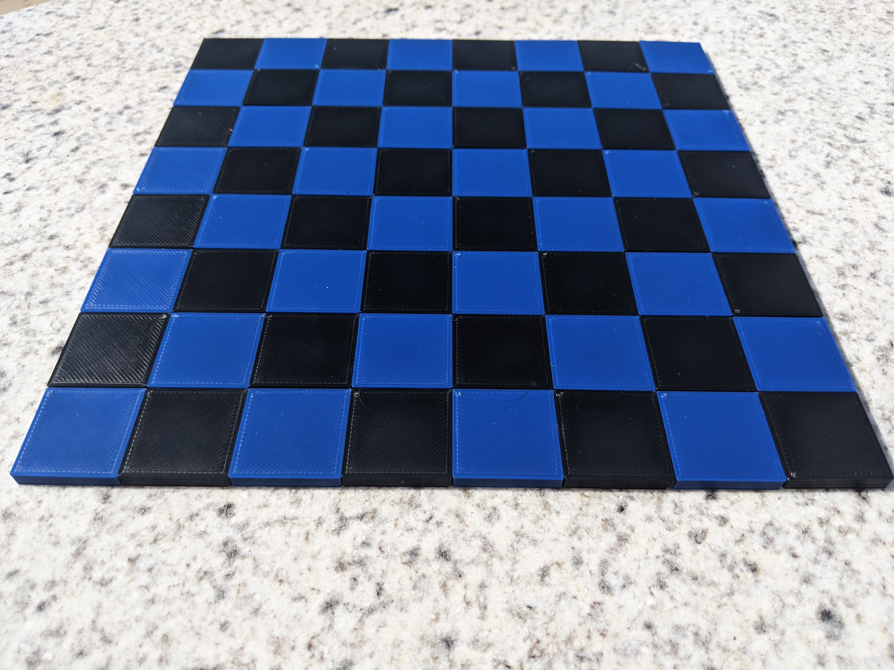

Chess
A 3D-Printed Chess Set.


Designed by Sophia Benbenek (@EihpoSono) and Stuart Scott (@StuartMScott).
- Slicer: Cura Lulzbot Edition
- Printer: Lulzbot Mini
- Filament: Polylite PLA
- Nozzle Temperature: 205°
- Bed Temperature: 60°
Instructions
No permissions or attributions are required to download and print these models - just have fun with them. Feel free to share pictures of your prints with us.
This is a simple print, but due the high number of parts (96), can be time-consuming.
Choose a colour scheme for your set; either stick with the standard white vs black, or mix it up and create something unique. For clarity, these instructions will refer to the colours as Player1 and Player2.
Print two center tiles, one in each colour to ensure you like the colour scheme, and verify that the plugs and sockets fit well together given your specific printer and filament.
Board
Like all standard chess boards this board has 64 tiles: 36 Centers, 24 Edges, and 4 Corners.
The board tiles connect together using a plug and socket design to form a rigid playing surface.
Supports are advised for the board tiles to ensure the socket overhang is level and can fully accommodate the plug.
Aside: An initial design used one plug and one socket on each side, while this was a strong connection, it was difficult to attach as it required a twisting motion that was not possible when attaching a tile to two others. A later design used plugs on one set of opposite sides, and sockets on the other, however due to similar assembly difficulties this design was dropped. In the current design two adjacent sides have plugs, and the other two adjacent sides have sockets. As a result, the board is assembled from one corner to the diagonally opposite corner.
Center Tiles
The 36 center tiles are identically shaped, with 2 plugs and 2 sockets (Center).
Corner Tiles
Of the 4 corner tiles, 2 have 1 plug and 1 socket (Corner-1P1S & Corner-1P1S-inverted), 1 has 2 plugs (Corner-2P), and 1 has 2 sockets (Corner-2S).
Edge Tiles
Of the 24 edge tiles, 12 have 2 plugs and 1 socket (Edge-2P1S), and the other 12 have 1 plug and 2 sockets (Edge-1P2S).
Assembly
Connect two tiles by placing the socket over the plug and gently pushing down until they click into place.
- When assembling the board, start with Corner-2P.
- To each exposed plug attach an Edge-2P1S.
- Attach a Center tile between the two edge pieces.
- Repeatedly attach the Edge-2P1S tiles followed by Center tiles until the board is 7x7 tiles.
- To the corners attach the Corner-1P1S & Corner-1P1S-inverted tiles, then attach the Edge-1P2S tiles.
- Attach the final piece Corner-2S.

Pieces
Supports are not needed for the playing pieces.
The Rook can be printed upright with supports for the center gap, however better results can be achieved by lying the Rook on its back and printing without supports to save your filament.
If the Bishop is printed with supports it ends up having "arms" which I quite liked and didn't remove in post-processing (though this outcome may be slicer-specific).
Post-Processing
All of these models were designed to require little-to-no post-processing, however as with any print there maybe a few imperfections that need addressing. In particular, remove the supports from the sockets and ensure there are no extra bits of filament that could prevent a good connection.
Downloads
Here are the links to the STL files, along with count x colour guides.
Board
- Center.stl (18 x Player1 + 18 x Player2)
- Corner-2P.stl (1 x Player1)
- Corner-2S.stl (1 x Player1)
- Corner-1P1S.stl (1 x Player2)
- Corner-1P1S-inverted.stl (1 x Player2)
- Edge-2P1S.stl (6 x Player1 + 6 x Player2)
- Edge-1P2S.stl (6 x Player1 + 6 x Player2)
Pieces
- Pawn.stl (8 x Player1 + 8 x Player2)
- Rook.stl (2 x Player1 + 2 x Player2)
- Knight.stl (2 x Player1 + 2 x Player2)
- Bishop.stl (2 x Player1 + 2 x Player2)
- Queen.stl (1 x Player1 + 1 x Player2)
- King.stl (1 x Player1 + 1 x Player2)